r_ui_list* l = r_create_ui_list_ex(&f->context, 0, 100, 320, 80, 16, 4); r_label(l, r_shrink(l->root_area, 16), "Hello from a second list");

<TODO: Explain UI list concept>
r_ui_list* r_create_ui_list(r_context* c, uint64_t target, uint64_t root_id, int width, int height); r_ui_list* r_create_ui_list_ex(r_context* c, uint64_t target, uint64_t root_id, int width, int height, int max_drawables, int max_interactables);
Creates a new UI list, it continues to exist until deleted by r_delete_ui_list.
UI lists store everything in rcut, in particular r_interactables and r_drawables.
Each UI list can be cleared and regenerated independently of each other.
target is a opaque target ID, usually referring to a window or render target. All coordinates are within that targets space.
See <TODO: rcut_SDL targets>.
r_create_ui_list_ex takes explicit capacities instead of RCUT_LIST_MAX_ELEMENTS.
r_ui_list* l = r_create_ui_list_ex(&f->context, 0, 100, 320, 80, 16, 4); r_label(l, r_shrink(l->root_area, 16), "Hello from a second list");
See also: r_delete_ui_list, r_popup, r_viewport, r_scroll_begin
void r_destroy_ui_list(r_ui_list* list);
<TODO: Describe destroy semantics>
| Parameter | |
|---|---|
list | <TODO: List to destroy> |
r_ui_list* dialog = r_sdl_dialog(f, 200, 320, 160, "Settings"); if(r_sdl_close_requested(f, dialog, true)) r_destroy_ui_list(dialog);
See also: r_create_ui_list, r_list_set_visibility
r_ui_list* r_ephemeral_keep_alive(r_ui_list* parent, uint64_t id);
<TODO: Rewrite, explain ephemeral lifetime>
Ephemerals are UI list attached to a rectangle with automatic lifetime managment.
Note here: Salt the r parameter here with r_salt to allow for multiple popups on a single item.
See also: r_popup, r_viewport
void r_list_clear(r_ui_list* list);
<TODO: Explain rebuild cycle>
Swap last_frame and current frame lists
if(ui->resized) { r_list_clear(ui); r_button(ui, r_shrink(ui->root_area, 16), "Rebuilt"); }
void r_list_reconcile(r_ui_list* list);
<TODO: Explain when and why to call>
Reconcile interaction state with the previous frame.
void r_list_set_visibility(r_ui_list* list, bool visible);
Shows or hides the list, a hidden list and its child lists are not drawn and receive no input.
See also: r_list_is_visible, r_create_ui_list
struct r_ui_list { r_context* context; // context = NULL indicates a free slot. void* userptr; // If non-zero this list is treated like a popup: it uses the coordinate system and event loop of the parent, but is rendered to it's own target. struct r_ui_list* ephemeral_parent; // Single linked list for iteration. // [List Idx 0][Child of List Idx 0][Child of Child of List Idx 0][List Idx 1][List Idx 2] struct r_ui_list* chain_prev; struct r_ui_list* chain_next; int generation; int parent_generation; // Compared to ephemeral_parent->generation to recognize when the parent is deleted. char* title; uint64_t target; // Usually it refers to a window, but can also be a render target or similar. Can be a simple index, or a pointer, or a handle depending on frontend. bool is_ephemeral:1; // Ephemeral lists are deleted if they weren't recreated/kept alive during a rebuild. bool is_masked:1; // Wheter to apply the root_area as scissor during rendering. bool is_hidden:1; // Can be used by tabs and popups. bool block_event_fallthrough:1; // If false, events get "bubbled up" to other r_ui_lists with the same target. bool block_accelerator_mode:1; // If true, Alt will not enter accelerator mode while focus is inside this UI list. bool needs_redraw:1; bool resized:1; // Set when the root_area of a root list changed size, cleared by r_list_clear. bool needs_ephemeral_sweep:1; // Is set to true when a ephemeral was marked to be deleted. This allows cleaning up ephemeral lists without regular list rebuilds. bool is_marked_as_unused:1; bool is_marked_as_to_delete:1; bool is_modal:1; bool is_viewport:1; bool is_tooltip:1; bool has_scrollbar:1; bool close_on_outside_click:1; bool use_transform_matrix:1; float content_transform[2][3]; float scroll_x, scroll_y; // Area that is representitive of what space this UI list visually fills. Viewports get masked to this area. The X/Y coordinate is 0, 0 for windows as it's relative to their own coordinate system. rect root_area; // Determines min/max for scrollable viewports. rect document_area; uint64_t anchor_id; //rect global_mapping; // Where the ui_list is being displayed in global screen coordinates. int frame_parity; uint32_t build_count; r_paged_buffer draw_buffers[2]; r_drawable* draw_items; r_drawable* draw_items_last_frame; int count_draw_items; int count_draw_items_last_frame; r_paged_buffer interact_buffers[2]; r_interact* interact_items; r_interact* interact_items_last_frame; int count_interact_items; int count_interact_last_frame; r_paged_buffer storage_buffers[2]; uint8_t* storage_buffer; uint8_t* storage_buffer_last_frame; int storage_buffer_cur_tail; int storage_buffer_last_tail; r_hashmap id_hash[2]; rect drawn_area; uint64_t drawn_target; rect damage; };
<TODO: Describe important fields>
See also: r_create_ui_list, r_list_clear
#define RCUT_LIST_MAX_ELEMENTS 4096 // ~4 millionths of address space per r_ui_list #define RCUT_LIST_MAX_ELEMENTS 65535 // ~1 billionths of address space per r_ui_list
<TODO: Rewrite as user docs>
This is the maximum number of elements a r_ui_list can grow to.
This much virtual memory will be reserved. It will only be commited if needed.
Reserved virtual memory is a limited resource on 32 bit systems, but basically free on 64 systems, hence the different limits.
void r_ephemeral_mark_to_delete(r_ui_list* parent, uint64_t id);
<TODO: Explain deferred ephemeral deletion>
r_ui_list* r_popup(r_ui_list* parent, rect r, uint32_t flags, uint64_t salt); r_ui_list* r_popup_keep_alive(r_ui_list* parent, rect r, uint64_t salt); void r_popup_mark_to_delete(r_ui_list* parent, rect r, uint64_t salt);
<TODO: Describe popup creation, flags>
typedef enum r_popup_flags { R_POPUP_TOOLTIP = 1 << 0, // Only shows something: no input (the mouse goes to what's below), at most RCUT_EPHEMERAL_MAX_ELEMENTS elements. R_POPUP_AUTOCLOSE = 1 << 1, // Clicking outside of it (and its child popups) or pressing Escape closes it (close_on_outside_click). For menus. } r_popup_flags;
<TODO: Describe flag combinations>
r_ui_list* r_viewport(r_ui_list* parent, rect r);
r_ui_list* r_viewport_keep_alive(r_ui_list* parent, rect r);
void r_viewport_mark_to_delete(r_ui_list* parent, rect r);
<TODO: Explain viewport lists, masking>
r_ui_list* r_scroll_begin(r_ui_list* parent, rect r);
r_ui_list* r_scroll_begin_ex(r_ui_list* parent, rect r, int frame_style);
<TODO: Explain scroll region usage>
void r_scroll_end(r_ui_list* parent, r_ui_list* viewport);
<TODO: Explain content size update>
void r_scroll_to(r_ui_list* viewport, float x, float y);
<TODO: Describe scroll coordinates>
rect r_list_get_content_rect(r_ui_list* list);
Returns the bounding rectangle of all drawables in the list, in list space.
See also: r_scroll_end, rect_expand
void r_list_get_transform(r_ui_list* l, int* origin_x, int* origin_y, rect* clip);
<TODO: Describe origin and clip>
bool r_list_is_visible(r_ui_list* l);
Returns false if the list or any of its parent lists is hidden.
See also: r_list_set_visibility
void r_list_print(r_ui_list* l);
Prints the list's drawables and interactables to stdout for debugging.
See also: r_ui_list
#define RCUT_EPHEMERAL_MAX_ELEMENTS 256 // Tooltips, all other lists use RCUT_LIST_MAX_ELEMENTS #define RCUT_EPHEMERAL_MAX_ELEMENTS 512 // Tooltips, all other lists use RCUT_LIST_MAX_ELEMENTS
Maximum number of elements of a tooltip list, all other lists use RCUT_LIST_MAX_ELEMENTS.
See also: RCUT_LIST_MAX_ELEMENTS, r_tooltip, r_popup
<TODO: Introduce context and frontends>
typedef struct r_context r_context;
<TODO: Explain context ownership, usage>
void r_init_context(r_context* r);
Initializes the context and reserves memory for its UI lists.
See also: r_free_context, r_context, r_create_ui_list
void r_free_context(r_context* r);
Frees all UI lists and memory owned by the context.
See also: r_init_context
typedef struct r_interface { rect (*calc_outer_rect) (r_context* c, int style, rect* inner); rect (*calc_inner_rect) (r_context* c, int style, rect outer); uint64_t (*get_viewport_target)(r_ui_list* parent, rect relative_to); rect (*measure_text) (r_context* c, int style, const char* text, int len); rect (*measure_icon) (r_context* c, int style, int icon, int* gap); int (*break_text) (r_context* c, int style, const char* text, int len, int width, bool force, int* w); void (*get_layout) (r_context* c, int style, int* size, int* spacing); void (*set_clipboard) (r_context* c, const char* text); char* (*get_clipboard) (r_context* c); } r_interface;
<TODO: Describe frontend callbacks>
void r_advance_time(r_context* r, float dt);
<TODO: Explain per-frame time update>
bool r_context_sweep(r_context* c);
<TODO: Explain ephemeral sweep, return>
void r_damage_id(r_context* c, uint64_t id);
<TODO: Explain damage tracking>
void r_damage_clear(r_context* c);
<TODO: Explain when to call>
#define RCUT_CONTEXT_MAX_LISTS 128 #define RCUT_CONTEXT_MAX_LISTS 256
Maximum number of regular UI lists per context.
See also: RCUT_CONTEXT_MAX_EPHEMERAL_LISTS, r_create_ui_list
#define RCUT_CONTEXT_MAX_EPHEMERAL_LISTS 128 #define RCUT_CONTEXT_MAX_EPHEMERAL_LISTS 256
Maximum number of ephemeral UI lists (popups, viewports, tooltips) per context.
See also: RCUT_CONTEXT_MAX_LISTS, r_popup, r_viewport
<TODO: Explain rects and IDs>
typedef struct rect { int x, y, w, h; uint64_t id; } rect;
<TODO: Explain rect ID field>
rect r_salt(rect r, uint64_t salt);
<TODO: Explain salting and IDs>
Some salts you can use freely (R_SALT00 to R_SALT20). Don't worry any salt will do, you can also just write down a random number.
rect area = r_shrink(ui->root_area, 12); rect size = { .w = 90, .h = 32 }; rect yes = r_aligned(R_LEFT_CENTER, area, r_salt(size, R_SALT00)); rect no = r_aligned(R_RIGHT_CENTER, area, r_salt(size, R_SALT01)); r_button(ui, yes, "Yes"); r_button(ui, no, "No");

See also: r_cut_px
rect r_cut_px(r_alignment dir, rect* to_cut, int pixels, uint64_t salt);
<TODO: Explain cutting rect sides>
| Parameter | |
|---|---|
dir | <TODO: Side to cut from> |
to_cut | <TODO: Rect being cut down> |
salt | <TODO: Salt for new ID> |
rect main = ui->root_area; rect menu = r_cut_px(R_TOP, &main, 32, R_SALT00); rect status = r_cut_px(R_BOTTOM, &main, 24, R_SALT01); rect side = r_cut_px(R_LEFT, &main, 100, R_SALT02); r_panel(ui, menu, R_STYLE_PANEL); r_panel(ui, status, R_STYLE_PANEL); r_panel(ui, side, R_STYLE_PANEL); r_label(ui, r_shrink(menu, 8), "Menu"); r_label(ui, r_shrink(status, 4), "Status"); r_label(ui, r_shrink(side, 8), "Side"); r_label(ui, r_shrink(main, 8), "Main");

<TODO: Caption for screenshot>
typedef enum r_alignment { R_BOTTOM = (1 << 0), R_V_CENTER = (1 << 1), R_TOP = (1 << 2), R_LEFT = (1 << 3), R_H_CENTER = (1 << 4), R_RIGHT = (1 << 5), // R_TOP_LEFT = R_TOP | R_LEFT, R_BOTTOM_LEFT = R_BOTTOM | R_LEFT, R_TOP_RIGHT = R_TOP | R_RIGHT, R_BOTTOM_RIGHT = R_BOTTOM | R_RIGHT, R_TOP_CENTER = R_TOP | R_H_CENTER, R_BOTTOM_CENTER = R_BOTTOM | R_H_CENTER, R_LEFT_CENTER = R_LEFT | R_V_CENTER, R_RIGHT_CENTER = R_RIGHT | R_V_CENTER, R_CENTER = R_H_CENTER | R_V_CENTER, } r_alignment;
<TODO: Explain alignment flag combinations>
rect rect_expand_pt(rect a, int x, int y); rect rect_expand(rect a, rect b);
Returns the smallest rectangle containing both a and b with the ID of a, rect_expand_pt does the same for a point.
See also: rect_intersect, r_grow
rect rect_intersect(rect a, rect b);
Returns the overlap of a and b with the ID of a, its size is 0 if they don't overlap.
See also: rect_expand
enum r_salts { R_SALT00 = 1009, R_SALT01 = 1013, R_SALT02 = 1019, R_SALT03 = 1021, R_SALT04 = 1031, R_SALT05 = 1033, R_SALT06 = 1039, R_SALT07 = 1049, R_SALT08 = 1051, R_SALT09 = 1061, R_SALT10 = 1063, R_SALT11 = 1069, R_SALT12 = 1087, R_SALT13 = 1091, R_SALT14 = 1093, R_SALT15 = 1097, R_SALT16 = 1103, R_SALT17 = 1109, R_SALT18 = 1117, R_SALT19 = 1123, R_SALT20 = 1129, };
Predefined salt values for r_salt and the cutting functions. You can use these freely or use your own values. There are no "bad" salts other than reusing the same salt at multiple places.
rect r_cut_fraction(r_alignment dir, rect* to_cut, float fraction, uint64_t salt);
<TODO: Describe fraction cutting>
void r_cut_group(r_alignment dir, rect* to_cut, rect** r, int num_rects);
Cuts one rectangle per entry of r from to_cut, sized by each entry's current width or height.
See also: r_cut_px, r_expand_group
rect r_expand_px(r_alignment dir, rect* to_expand, int pixels, uint64_t salt);
Grows to_expand by pixels towards dir and returns the added area.
See also: r_cut_px, r_expand_group
void r_expand_group(r_alignment dir, rect* to_expand, rect** r, int num_rects);
Grows to_expand once per entry of r, sized by each entry's current width or height, and stores the added areas in r.
See also: r_expand_px, r_cut_group
rect r_offset(rect r, int x_offset, int y_offset);
Moves a rectangle by the given offset, keeping its ID.
rect r_grow(rect r, int pixels); rect r_grow_sides(rect r, int left, int top, int right, int bottom);
Grows a rectangle by pixels on all sides, or per side with r_grow_sides, keeping its ID.
rect r_shrink(rect r, int pixels); rect r_shrink_sides(rect r, int left, int top, int right, int bottom);
Shrinks a rectangle by pixels on all sides, or per side with r_shrink_sides, keeping its ID.
void r_min_size(rect *r, int w, int h);
Enlarges the rectangle to at least w by h pixels.
See also: r_fill
<TODO: Introduce layout iterators>
typedef struct r_layout_iter { r_ui_list* l; rect start; rect area; r_alignment dir; int size; int spacing; int count; r_drawable* bg; int style; int line_h; int line_first; rect last; r_layout_type type; } r_layout_iter;
<TODO: Describe iterator fields>
typedef enum r_layout_type { R_LAYOUT_STACK, // Cuts consecutive rectangles in the direction `dir`. R_LAYOUT_FLOW, // Places rectangles left to right, wrapping into new lines aligned by `dir`. } r_layout_type;
How a layout iterator places its rectangles.
r_layout_iter r_stack(r_ui_list* l, rect area, r_alignment dir);
<TODO: Explain stacking direction, spacing>
r_layout_iter it = r_stack(ui, r_shrink(ui->root_area, 12), R_TOP); r_button(ui, r_next(&it, -1), "New"); r_button(ui, r_next(&it, -1), "Open"); r_button(ui, r_next(&it, -1), "Save");

See also: r_next, r_remaining
rect r_next(r_layout_iter* s, int size); rect r_next_fraction(r_layout_iter* s, float fraction); rect r_next_fit(r_layout_iter* s, int style, const char* text); rect r_next_fit_ex(r_layout_iter* s, int style, int icon, const char* text); rect r_next_keyed(r_layout_iter* s, int size, uint64_t key);
<TODO: Explain size argument, variants>
r_layout_iter cols = r_stack(ui, r_shrink(ui->root_area, 12), R_LEFT); for(int i = 0; i < 3; i++) r_button(ui, r_next_fraction(&cols, 1.0f / (3 - i)), (char*[]){ "Low", "Medium", "High" }[i]);

<TODO: Caption for screenshot>
rect r_remaining(r_layout_iter* s);
Returns all space left in the layout iterator.
rect r_last(r_layout_iter* s);
Returns the rectangle the layout iterator returned last, to place several elements on the same rectangle.
void r_fill(r_alignment dir, rect target, rect** r, int num_rects);
<TODO: Rewrite, add usage example>
The rectangles should be initialized with their minimum sizes before calling.
r_layout_iter r_layout(r_ui_list* l, rect area, r_alignment dir, int style); r_layout_iter r_layout_rows(r_ui_list* l, rect area, int style); r_layout_iter r_layout_columns(r_ui_list* l, rect area, int style);
<TODO: Explain style based spacing>
void r_gap(r_layout_iter* s, int size);
Skips size pixels of the layout iterator's remaining area.
r_layout_iter r_row(r_layout_iter* s, int size, r_alignment dir);
<TODO: Explain nested row layouts>
r_layout_iter r_group_begin(r_layout_iter* parent, int style);
<TODO: Explain grouped layout backgrounds>
rect r_group_end(r_layout_iter* group, r_layout_iter* parent);
<TODO: Describe returned group rect>
r_layout_iter r_flow_begin(r_layout_iter* parent, int style, r_alignment align);
Starts a flow layout inside parent: elements are placed left to right and wrap into new lines.
The horizontal bits of align align each line, the vertical bits align the elements within a line.
void r_text(r_layout_iter* flow, int style, const char* text);
Adds word-wrapped text to a flow layout, split into one label per line, using the flow's style if style is 0.
r_layout_iter it = r_stack(ui, r_shrink(ui->root_area, 12), R_TOP); r_layout_iter flow = r_flow_begin(&it, R_STYLE_LABEL, R_TOP_LEFT); r_text(&flow, 0, "Text wraps at word boundaries to fit the width of the flow layout."); r_flow_end(&flow, &it);
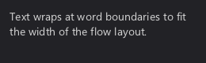
rect r_flow_end(r_layout_iter* flow, r_layout_iter* parent);
<TODO: Describe returned flow rect>
void r_align(r_alignment corner, rect target, rect* r); void r_align_group(r_alignment corner, rect target, rect** r, int num_rects); void r_align_fraction(rect target, rect* r, float x_fraction, float y_fraction);
<TODO: Explain aligning inside target>
rect r_aligned(r_alignment corner, rect target, rect src); rect r_aligned_fraction(rect target, rect src, float x_fraction, float y_fraction);
<TODO: Explain returned aligned rect>
void r_aside(r_alignment corner, rect target, rect* r); void r_aside_group(r_alignment corner, rect target, rect** r, int num_rects); void r_aside_fraction(rect target, rect* r, float x_fraction, float y_fraction);
<TODO: Explain placing beside target>
void r_relative_to_fraction(rect target, rect* r, float x_fraction, float y_fraction); void r_relative_to(r_alignment corner, rect target, rect* r);
<TODO: Explain relative positioning>
rect r_inner(r_context* c, int style, rect outer);
Returns the content rectangle of an element with the style, given its outer rectangle.
See also: r_outer, r_draw_stylebox_inner_rect
rect r_outer(r_context* c, int style, rect* inner);
Returns the outer rectangle an element with the style needs to fit the content rectangle inner.
See also: r_inner, r_measure, r_draw_stylebox_outer_rect
rect r_with_margins(r_context* c, int style, rect outer);
Grows the outer rectangle by half the style's default spacing on every side.
See also: r_remove_margins, r_layout_default_spacing
rect r_remove_margins(r_context* c, int style, rect with_margins);
Removes the margins added by r_with_margins.
See also: r_with_margins
int r_layout_default_size(r_context* c, int style);
Returns the theme's default element size for the style, 28 if the frontend provides none.
See also: r_layout_default_spacing, r_theme_layout, r_interface
int r_layout_default_spacing(r_context* c, int style);
Returns the theme's default spacing between elements of the style, 8 if the frontend provides none.
See also: r_layout_default_size, r_theme_layout
<TODO: Introduce text measuring>
rect r_measure(r_context* c, int style, const char* label); rect r_measure_n(r_context* c, int style, const char* text, int len); rect r_measure_ex(r_context* c, int style, int icon, const char* text);
<TODO: Describe measuring variants>
void r_style_measure_all(r_context* c, int style, const char* label, rect* outer_with_margins, rect* outer, rect* inner);
<TODO: Explain inner/outer/margin rects>
<TODO: Introduce high level widgets>
void r_button(r_ui_list* l, rect r, const char* text); r_drawable* r_button_ex(r_ui_list* l, rect r, int style, int icon, const char* text);
<TODO: Describe button, add see_also>
rect ok = r_aligned(R_CENTER, ui->root_area, (rect){ .w = 100, .h = 32 }); r_button(ui, ok, "OK"); r_on_click(ui, ok, on_ok);

void r_label(r_ui_list* l, rect r, const char* text); r_drawable* r_label_ex(r_ui_list* l, rect r, int style, int icon, const char* text); void r_label_value(r_ui_list* l, rect r, const char* fmt, r_data_binding binding);
<TODO: Describe label variants>
static float volume = 0.6f; // [...] r_layout_iter it = r_stack(ui, r_shrink(ui->root_area, 12), R_TOP); r_label(ui, r_next(&it, 24), "Plain label"); r_label_value(ui, r_next(&it, 24), "Volume: %.2f", R_PTR(&volume));

void r_on_click(r_ui_list* l, rect r, void (*on_click)(void)); void r_on_click_i32(r_ui_list* l, rect r, void (*on_click)(int32_t), int32_t value); void r_on_click_u64(r_ui_list* l, rect r, void (*on_click)(uint64_t), uint64_t value); void r_on_click_f32(r_ui_list* l, rect r, void (*on_click)(float), float value); void r_on_click_f64(r_ui_list* l, rect r, void (*on_click)(double), double value); void r_on_click_ptr(r_ui_list* l, rect r, void (*on_click)(void*), void* value); void r_on_click_ptr_i32(r_ui_list* l, rect r, void (*on_click)(void*, int32_t), void* ptr, int index);
<TODO: Explain click callback variants>
r_layout_iter it = r_stack(ui, ui->root_area, R_TOP); for(int i = 0; i < 4; i++) { rect r = r_next(&it, -1); r_button(ui, r, "Item"); r_on_click_i32(ui, r, on_select, i); }
void r_checkbox(r_ui_list* l, rect r, const char* text, r_data_binding binding);
<TODO: Describe checkbox>
| Parameter | |
|---|---|
binding | <TODO: Bound bool value> |
static bool mute = true; static bool fullscreen = false; // [...] r_layout_iter it = r_stack(ui, r_shrink(ui->root_area, 12), R_TOP); r_checkbox(ui, r_next(&it, -1), "Mute", R_PTR(&mute)); r_checkbox(ui, r_next(&it, -1), "Fullscreen", R_PTR(&fullscreen));

void r_slider_h(r_ui_list* l, rect r, float min, float max, float step, r_data_binding binding); void r_slider_v(r_ui_list* l, rect r, float min, float max, float step, r_data_binding binding);
<TODO: Describe step and binding>
static float volume = 0.6f; // [...] r_layout_iter it = r_stack(ui, r_shrink(ui->root_area, 12), R_TOP); r_label_value(ui, r_next(&it, 24), "Volume %.2f", R_PTR(&volume)); r_slider_h(ui, r_next(&it, 24), 0, 1, 0.05f, R_PTR(&volume));

static float levels[3] = { 0.8f, 0.5f, 0.3f }; // [...] r_layout_iter row = r_stack(ui, r_shrink(ui->root_area, 12), R_LEFT); for(int i = 0; i < 3; i++) r_slider_v(ui, r_next(&row, 24), 0, 1, 0.05f, R_PTR(&levels[i]));
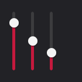
See also: r_slider_box, r_spinbox
enum r_style { R_STYLE_FALLBACK = 0, // If the style doesn't know how to draw something, it should fallback to drawing this instead. R_STYLE_WINDOW, R_STYLE_TOOLTIP, R_STYLE_BUTTON, R_STYLE_HEADER, R_STYLE_LABEL, R_STYLE_ICON, R_STYLE_TEXT, R_STYLE_INPUT, // Text areas with various misc functionalities R_STYLE_MENU_BG, R_STYLE_MENU_ITEM, R_STYLE_CONTEXT_MENU_BG, R_STYLE_CONTEXT_MENU_ITEM, R_STYLE_PANEL, R_STYLE_CHECKBOX, R_STYLE_RADIO, R_STYLE_TOGGLE, R_STYLE_SLIDEBOX, // Mix between slider and input box, with both numerical and drag input. R_STYLE_SLIDER, R_STYLE_SCROLLBAR, R_STYLE_MENUBAR_BG, R_STYLE_MENUBAR_ITEM, R_STYLE_INPUT_LINE_EDIT, R_STYLE_INPUT_MULTILINE_EDIT, R_STYLE_PROGRESS, R_STYLE_TAB, R_STYLE_TAB_BAR, R_STYLE_SEPARATOR, R_STYLE_COLLAPSIBLE, // Header of a collapsible section. R_STYLE_LIST_ITEM, // Selectable item in a list. R_STYLE_DROPDOWN, // Button that opens a selection popup. R_STYLE_SPINBOX, R_STYLE_BACKDROP, // Fills a window behind something modal. Unused since dialogs are root lists of their own. R_STYLE_DIALOG, R_STYLE_TAB_PAGE, // Background of the content below tabs. R_STYLE_SEGMENTED, // Joined choices, one is selected. R_STYLE_IMAGE, // No stylebox, only r_drawable.image_data. R_STYLE_BASE_MASK = 0xFF, R_FLAG_VERTICAL = R_BIT(0) << 8, // Vertical scrollbar/slider/separator, horizontal by default. R_FLAG_EMBEDDED = R_BIT(1) << 8, // Background adapts to the surrounding element (list, menu, context menu). R_FLAG_MASK = 0xFF << 8, R_STATE_SELECTED = R_BIT(0) << 16, // Selection in a menu. R_STATE_PRESSED = R_BIT(1) << 16, R_STATE_HOVER = R_BIT(2) << 16, R_STATE_DISABLED = R_BIT(3) << 16, R_STATE_TOGGLED = R_BIT(4) << 16, R_STATE_FOCUS = R_BIT(5) << 16, R_STATE_MASK = 0xFF << 16, R_VARIANT_FLAT = 1 << 24, // Usually means without border and the element is just implied through icon + label R_VARIANT_INSET = 2 << 24, // Inset panel. R_VARIANT_RAISED = 3 << 24, // Raised panel. R_VARIANT_PRIMARY = 4 << 24, // More colorful R_VARIANT_TERTIARY = 5 << 24, // Less color, flatter R_VARIANT_LIST_ITEM = 6 << 24, // Embedded in a list, should use a appropriate background for it R_VARIANT_MENU_ITEM = 7 << 24, // Embedded in a menu, should blend into it R_VARIANT_CUSTOM_1 = 8 << 24, R_VARIANT_CUSTOM_2 = 9 << 24, R_VARIANT_CUSTOM_3 = 10 << 24, R_VARIANT_CUSTOM_4 = 11 << 24, R_VARIANT_CUSTOM_5 = 12 << 24, R_VARIANT_CUSTOM_6 = 13 << 24, R_VARIANT_CUSTOM_7 = 14 << 24, R_VARIANT_CUSTOM_8 = 15 << 24, R_VARIANT_MASK = 0xF << 24, R_COMPONENT_JOINED = 1 << 28, // Part of an complex input, wedged inbetween endcaps. R_COMPONENT_ENDCAP_START = 2 << 28, // For example to create a text input with a popup selection then we have: R_COMPONENT_ENDCAP_END = 3 << 28, // [R_STYLE_INPUT | R_COMPONENT_ENDCAP_START][R_STYLE_BUTTON | R_COMPONENT_ENDCAP_END] R_COMPONENT_TRACK = 4 << 28, // Primary background for progress bars/sliders/scroll bar, behind joined components (with the style of the joined parts). R_COMPONENT_FILL = 5 << 28, // Alternative background for progress bars that indicate the progress. R_COMPONENT_THUMB = 6 << 28, // Draggable portion of slider/scroll bar. R_COMPONENT_CARET = 7 << 28, // Text cursor, blinks while focused. R_COMPONENT_SELECTION = 8 << 28, // Text selection highlight. R_COMPONENT_MASK = 0xF << 28, };
<TODO: Explain style composition>
void r_icon(r_ui_list* l, rect r, int style, int icon);
<TODO: Describe icon drawing>
r_layout_iter it = r_stack(ui, r_shrink(ui->root_area, 12), R_LEFT); int icons[] = { R_ICON_HOME, R_ICON_FOLDER, R_ICON_SEARCH, R_ICON_SETTINGS, R_ICON_INFO }; for(int i = 0; i < 5; i++) r_icon(ui, r_next(&it, 24), 0, icons[i]);
void r_header(r_ui_list* l, rect r, const char* text);
Draws a label with the header style.
r_layout_iter it = r_stack(ui, r_shrink(ui->root_area, 12), R_TOP); r_header(ui, r_next(&it, 28), "Audio"); r_label(ui, r_next(&it, 20), "Output device");
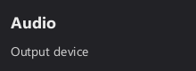
See also: r_label
void r_panel(r_ui_list* l, rect r, int style);
Draws a background panel, using R_STYLE_PANEL if style is 0.
r_layout_iter rows = r_stack(ui, r_shrink(ui->root_area, 12), R_TOP); r_panel(ui, r_next(&rows, 64), 0); r_label(ui, r_shrink(r_last(&rows), 8), "R_STYLE_PANEL"); r_panel(ui, r_next(&rows, 64), R_STYLE_PANEL | R_VARIANT_INSET); r_label(ui, r_shrink(r_last(&rows), 8), "R_VARIANT_INSET"); r_panel(ui, r_next(&rows, 64), R_STYLE_PANEL | R_VARIANT_RAISED); r_label(ui, r_shrink(r_last(&rows), 8), "R_VARIANT_RAISED");
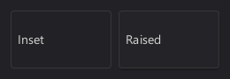
See also: r_style, r_separator
void r_separator(r_ui_list* l, rect r);
Draws a separator line through the center of r, horizontal if r is wider than tall, vertical otherwise.
r_layout_iter it = r_stack(ui, r_shrink(ui->root_area, 12), R_TOP); r_label(ui, r_next(&it, 20), "Above"); r_separator(ui, r_next(&it, 1)); r_label(ui, r_next(&it, 20), "Below");
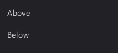
void r_toggle(r_ui_list* l, rect r, const char* text, r_data_binding binding);
A labeled switch that works like r_checkbox.
static bool mute = true; static bool fullscreen = false; // [...] r_layout_iter it = r_stack(ui, r_shrink(ui->root_area, 12), R_TOP); r_toggle(ui, r_next(&it, -1), "Mute", R_PTR(&mute)); r_toggle(ui, r_next(&it, -1), "Fullscreen", R_PTR(&fullscreen));
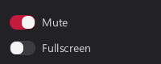
See also: r_checkbox, r_radio
void r_radio(r_ui_list* l, rect r, const char* text, int64_t value, r_data_binding binding);
<TODO: Explain value matching binding>
static int quality = 1; // [...] r_layout_iter row = r_stack(ui, r_shrink(ui->root_area, 12), R_LEFT); char* labels[] = { "Low", "Medium", "High" }; for(int i = 0; i < 3; i++) r_radio(ui, r_next_fraction(&row, 1.0f / (3 - i)), labels[i], i, R_PTR(&quality));
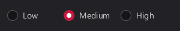
void r_selectable(r_ui_list* l, rect r, const char* text, int64_t value, r_data_binding binding);
<TODO: Explain selectable list items>
static int selected = 1; // [...] r_layout_iter it = r_stack(ui, r_shrink(ui->root_area, 8), R_TOP); it.spacing = 2; char* files[] = { "notes.md", "budget.xlsx", "holiday.jpg" }; for(int i = 0; i < 3; i++) r_selectable(ui, r_next(&it, 26), files[i], i, R_PTR(&selected));
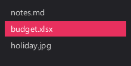
void r_slider_box(r_ui_list* l, rect r, const char* text, float min, float max, float step, r_data_binding binding);
<TODO: Explain drag and input>
static float brightness = 40; // [...] r_layout_iter it = r_stack(ui, r_shrink(ui->root_area, 12), R_TOP); r_slider_box(ui, r_next(&it, 26), "Brightness", 0, 100, 1, R_PTR(&brightness));
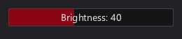
void r_spinbox(r_ui_list* l, rect r, float min, float max, float step, r_data_binding binding);
<TODO: Describe spinbox step buttons>
static float count = 3; // [...] rect r = r_aligned(R_CENTER, ui->root_area, (rect){ .w = 120, .h = 28 }); r_spinbox(ui, r, 0, 99, 1, R_PTR(&count));
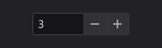
void r_progress(r_ui_list* l, rect r, float min, float max, r_data_binding binding);
Draws a progress bar filled to the bound value within min to max, clamped to that range.
static float progress = 65.0f; r_layout_iter it = r_stack(ui, r_shrink(ui->root_area, 12), R_TOP); r_label(ui, r_next(&it, 20), "Downloading... 65%"); r_progress(ui, r_next(&it, 8), 0, 100, R_PTR(&progress));
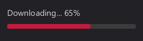
void r_tabs(r_ui_list* l, rect r, char** labels, int count, r_data_binding selected, r_ui_list** pages);
<TODO: Explain tab pages lists>
static int tab = 0; // [...] static char* labels[] = { "Files", "Recent" }; r_ui_list* pages[2]; r_tabs(ui, r_shrink(ui->root_area, 12), labels, 2, R_PTR(&tab), pages); r_label(pages[0], r_shrink(pages[0]->document_area, 8), "Contents of the first tab"); r_label(pages[1], r_shrink(pages[1]->document_area, 8), "Contents of the second tab");
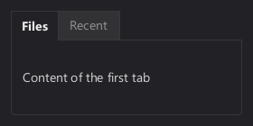
void r_dropdown(r_ui_list* l, rect r, char** items, int count, r_data_binding selected);
<TODO: Describe dropdown items, binding>
static int language = 0; // [...] static char* languages[] = { "English", "Deutsch", "Français" }; rect r = r_aligned(R_TOP, r_shrink(ui->root_area, 16), (rect){ .w = 160, .h = 28 }); r_dropdown(ui, r, languages, 3, R_PTR(&language));
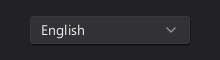
void r_segmented(r_ui_list* l, rect r, char** labels, int count, r_data_binding selected);
<TODO: Describe segmented choices>
static int period = 1; // [...] static char* periods[] = { "Day", "Week", "Month" }; rect r = r_aligned(R_CENTER, ui->root_area, (rect){ .w = 220, .h = 28 }); r_segmented(ui, r, periods, 3, R_PTR(&period));
bool r_tree_node(r_ui_list* l, rect r, int depth, const char* text, int icon, bool has_children, r_data_binding open, int64_t value, r_data_binding selected);
<TODO: Explain tree node parameters>
static int selected = 1; static bool tree_open[4] = { true }; // [...] r_layout_iter it = r_stack(ui, r_shrink(ui->root_area, 8), R_TOP); it.spacing = 2; if(r_tree_node(ui, r_next_keyed(&it, 24, 0), 0, "Projects", R_ICON_FOLDER, true, R_PTR(&tree_open[0]), 0, R_PTR(&selected))) { r_tree_node(ui, r_next_keyed(&it, 24, 1), 1, "rcut_core.h", R_ICON_FILE, false, R_PTR(&tree_open[1]), 1, R_PTR(&selected)); r_tree_node(ui, r_next_keyed(&it, 24, 2), 1, "rcut_draw.h", R_ICON_FILE, false, R_PTR(&tree_open[2]), 2, R_PTR(&selected)); } r_tree_node(ui, r_next_keyed(&it, 24, 3), 0, "Photos", R_ICON_FOLDER, true, R_PTR(&tree_open[3]), 3, R_PTR(&selected));
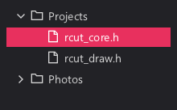
void r_split(r_ui_list* l, rect r, r_alignment dir, r_data_binding fraction, int min_first, int min_second, rect* first, rect* second);
<TODO: Explain split fraction, minimums>
static float split = 0.4f; // [...] rect left, right; r_split(ui, r_shrink(ui->root_area, 8), R_LEFT, R_PTR(&split), 60, 60, &left, &right); r_panel(ui, left, 0); r_panel(ui, right, 0); r_label(ui, r_shrink(left, 8), "Left"); r_label(ui, r_shrink(right, 8), "Right");
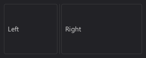
void r_line_edit(r_ui_list* l, rect r, char* buffer, int capacity, const char* placeholder); void r_line_edit_on_submit(r_ui_list* l, rect r, void (*on_submit)(char* buffer));
<TODO: Describe single line editing>
static char name[64] = ""; static char search[64] = "rcut"; // [...] r_layout_iter it = r_stack(ui, r_shrink(ui->root_area, 12), R_TOP); r_line_edit(ui, r_next(&it, -1), name, sizeof(name), "Your name"); r_line_edit(ui, r_next(&it, -1), search, sizeof(search), "Search");
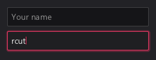
void r_text_area(r_ui_list* l, rect r, char* buffer, int capacity, const char* placeholder);
<TODO: Describe multiline editing>
static char notes[256] = "Meeting notes\n- Ship the docs\n- Review the theme"; // [...] r_text_area(ui, r_shrink(ui->root_area, 12), notes, sizeof(notes), "Write something...");
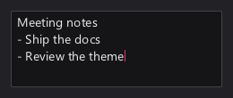
void r_text_edit_ex(r_ui_list* l, rect r, char* buffer, int capacity, const char* placeholder, int style, bool multiline);
<TODO: Describe style and multiline>
static char search[64] = "rcut"; // [...] r_layout_iter it = r_stack(ui, r_shrink(ui->root_area, 12), R_TOP); r_text_edit_ex(ui, r_next(&it, -1), search, sizeof(search), "Search", R_STYLE_INPUT | R_VARIANT_FLAT, false);
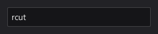
typedef struct r_text_edit_state r_text_edit_state;
<TODO: Explain editor state storage>
void r_tooltip(r_ui_list* l, rect r, const char* text);
Shows text (at most 511 bytes) in a tooltip while the mouse hovers r.
rect ok = r_aligned(R_CENTER, ui->root_area, (rect){ .w = 100, .h = 32 }); r_button(ui, ok, "OK"); r_tooltip(ui, ok, "Applies the settings and closes the window.");
See also: r_popup, RCUT_MOUSE_*
rect r_dialog_begin(r_ui_list* dialog);
<TODO: Explain dialog content area>
static char name[64] = ""; // [...] r_ui_list* dialog = r_sdl_dialog(f, 300, 320, 140, "Settings"); rect area = r_dialog_begin(dialog); r_layout_iter it = r_stack(dialog, area, R_TOP); r_label(dialog, r_next(&it, 20), "Display name"); r_line_edit(dialog, r_next(&it, -1), name, sizeof(name), "Your name");
typedef enum r_icon_variant{ R_ICON_NONE, R_ICON_DROPDOWN_INDICATOR, R_ICON_UP, R_ICON_DOWN, R_ICON_LEFT, R_ICON_RIGHT, R_ICON_BACK, // <- R_ICON_MORE, // ... R_ICON_EXPANDED, // [-] R_ICON_COLLAPSED, // [+] R_ICON_SHOW_DETAILS, // > R_ICON_HIDE_DETAILS, // ▼ R_ICON_ADD, // + R_ICON_SUBTRACT, // - R_ICON_EDIT, R_ICON_SEARCH, R_ICON_RELOAD, R_ICON_ZOOM_IN, R_ICON_ZOOM_OUT, R_ICON_ROTATE_LEFT, R_ICON_ROTATE_RIGHT, R_ICON_LOCK, R_ICON_UNLOCK, R_ICON_CHECKED, R_ICON_UNCHECKED, R_ICON_MARKED, R_ICON_INFO, // (?) R_ICON_WARNING, // (!) R_ICON_ERROR, // (x) R_ICON_MINIMIZE, // _ R_ICON_MAXIMIZE, R_ICON_UNMAXIMIZE, R_ICON_CLOSE, // x R_ICON_MENU, // Hamburger R_ICON_SETTINGS, R_ICON_HOME, R_ICON_FOLDER, R_ICON_FILE, R_ICON_SAVE, R_ICON_TRASH, R_ICON_COPY, R_ICON_CUT, R_ICON_PASTE, R_ICON_UNDO, R_ICON_REDO, R_ICON_STAR, R_ICON_HEART, R_ICON_BELL, R_ICON_PLAY, R_ICON_PAUSE, R_ICON_EYE, R_ICON_PERSON, R_ICON_USER } r_icon_variant;
<TODO: Describe built-in icons>
<TODO: Introduce menus and context menus>
typedef struct r_menu_item { char* label; int icon; char* shortcut; void (*on_click)(void); const struct r_menu_item* submenu; bool* checked; bool disabled; } r_menu_item;
<TODO: Describe item fields, submenus>
void r_menubar(r_ui_list* l, rect r, const r_menu_item* menus);
<TODO: Explain menu array termination>
static const r_menu_item file_menu[] = { { .label = "New", .icon = R_ICON_FILE, .shortcut = "Ctrl+N", .on_click = on_ok }, { .label = "Quit", .icon = R_ICON_CLOSE, .on_click = on_close }, { 0 }, }; static const r_menu_item menus[] = { { .label = "File", .submenu = file_menu }, { .label = "Edit", .submenu = file_menu }, { .label = "Help", .submenu = file_menu }, { 0 }, }; rect area = ui->root_area; r_menubar(ui, r_cut_px(R_TOP, &area, 30, R_SALT00), menus);
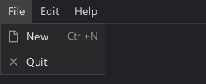
r_ui_list* r_menu_popup(r_ui_list* parent, rect anchor, const r_menu_item* items, r_alignment side);
<TODO: Describe popup menu placement>
r_callback* r_on_context(r_ui_list* l, rect r, const char* label, void (*on_select)(void));
<TODO: Explain context menu entries>
rect r_popup_place(r_ui_list* parent, rect anchor, int w, int h, r_alignment side);
<TODO: Describe popup placement rules>
<TODO: Explain binding concept>
typedef struct { bool use_function_indirection; union{ struct{ r_data_type ptr_type; void* ptr; int num_bits; int bit_offset; }; struct{ r_fn* getter; r_fn* setter; r_signature setter_sig; r_signature getter_sig; uint64_t index; void* pointer; }; }; } r_data_binding;
<TODO: Explain pointer vs getter/setter>
#define R_PTR(P) ((r_data_binding){ \ .ptr = (void*)(P), \ .num_bits = (int)(sizeof(*(P)) * 8), \ .ptr_type = R_TYPEOF(*(P)) })
<TODO: Describe pointer binding>
static bool mute = true; // [...] r_checkbox(ui, ui->root_area, "Mute", R_PTR(&mute));
#define R_BITFIELD(BASE, OFFSET, LENGTH) ((r_data_binding){ \ .ptr = (void*)(BASE), \ .num_bits = (LENGTH), \ .bit_offset = (OFFSET), \ .ptr_type = R_TYPEOF(*(BASE)) })
Binds LENGTH bits starting at bit OFFSET of the integer at BASE.
See also: R_PTR, R_GETSET, r_data_binding
#define R_GETSET(...) r_data_compact((r_data_desc){ __VA_ARGS__ })
<TODO: Explain getter/setter binding>
typedef struct r_data_desc { #define X(tag, ret) ret (*getter_##tag)(void); ret (*getter_##tag ##_i32)(int); ret (*getter_##tag ##_u64)(uint64_t); ret (*getter_##tag ##_ptr)(void*); ret (*getter_##tag ##_ptr_i32)(void*); R_SIGNATURE_LIST(X) #undef X #define X(tag, target_type) void (*setter_##tag)(target_type); void (*setter_i32_##tag)(int, target_type); void (*setter_u64_##tag)(uint64_t, target_type); void (*setter_ptr_##tag)(void*, target_type); void (*setter_ptr_i32_##tag)(void*, int32_t, target_type); R_SIGNATURE_LIST(X) #undef X uint64_t index; void* pointer; } r_data_desc;
<TODO: Explain getter/setter fields>
typedef enum r_data_type { R_BOOL, // True if any bit is set, false if none is set. R_FLOAT, // Only 32 bit (float) and 64 bit (double) supported. R_INT, // Most significant bit is sign bit. R_UINT, // Always positive. } r_data_type;
Type of the value a pointer binding refers to.
See also: R_PTR, r_data_binding
void r_seti(r_data_binding binding, int64_t value);
Writes an integer to the binding, converted to the bound type.
See also: r_geti, r_setd, r_data_binding
int64_t r_geti(r_data_binding binding);
Reads the binding as an integer.
void r_setd(r_data_binding binding, double value);
Writes a double to the binding, converted to the bound type.
double r_getd(r_data_binding binding);
Reads the binding as a double.
<TODO: Introduce low level utilities>
bool r_is_pressed_visual(r_context* c, uint64_t id);
Returns true if the element should look pressed: it is pressed and the mouse is still over it.
See also: r_draw_take_damage
bool r_dispatch(r_interact* target, r_event_type event_type, r_event* event);
<TODO: Explain event dispatch, return>
void r_change_focus(r_context* c, r_interact* new_focus);
Moves the keyboard focus to new_focus, or clears it if NULL, and sends R_FOCUS_EXIT and R_FOCUS_ENTER.
See also: r_event_type, r_focus_wants_text
bool r_focus_wants_text(r_context* c);
Returns true if the focused element accepts text input.
See also: r_post_text, r_change_focus
r_cursor r_hover_cursor(r_context* c);
Returns the mouse cursor of the hovered or dragged element.
See also: r_cursor
typedef enum r_cursor { R_CURSOR_DEFAULT, R_CURSOR_TEXT, R_CURSOR_HAND, R_CURSOR_RESIZE_H, // Left-right R_CURSOR_RESIZE_V, // Up-down } r_cursor;
Mouse cursor shapes, see r_hover_cursor.
See also: r_hover_cursor, r_interact
bool r_close_popups(r_context* c, bool only_topmost);
<TODO: Explain only_topmost, return>
<TODO: Introduce frontend input posting>
uint64_t r_post_key_input(r_context* r, uint64_t target, int32_t keycode, int32_t scancode, uint32_t modifier_flags);
<TODO: Describe return value, modifiers>
| Parameter | |
|---|---|
keycode | Keys that are special cased by rcut use Windows virtual key codes (R_KEY_*), frontends need to map their keys to these. Letters are expected as uppercase ASCII ('A'-'Z'), digits as ASCII. |
uint64_t r_post_mouse_down(r_context* r, uint64_t target, int mouse_button, float x, float y);
<TODO: Describe coordinates, return value>
| Parameter | |
|---|---|
mouse_button | R_MOUSE_LEFT, R_MOUSE_MIDDLE or R_MOUSE_RIGHT (same numbering as SDL). |
#define RCUT_MOUSE_DRAG_DISTANCE_DEFAULT 4 #define RCUT_MOUSE_PRESSED_INITIAL_REPEAT 0.5 #define RCUT_MOUSE_PRESSED_REPEAT 0.2 #define RCUT_MOUSE_HOVER_INITIAL_DELAY 0.4 #define RCUT_MOUSE_HOVER_REPEAT 0.2 #define RCUT_MOUSE_MULTI_CLICK_TIME 0.4
Mouse timings in seconds and the drag threshold in pixels:
RCUT_MOUSE_DRAG_DISTANCE_DEFAULT: Pixels the mouse must move while pressed before a drag starts.RCUT_MOUSE_PRESSED_INITIAL_REPEAT: Seconds a mouse button must be held before R_MOUSE_PRESSED starts repeating.RCUT_MOUSE_PRESSED_REPEAT: Seconds between repeated R_MOUSE_PRESSED events.RCUT_MOUSE_HOVER_INITIAL_DELAY: Seconds the mouse must rest on an element before the first R_MOUSE_HOVER event.RCUT_MOUSE_HOVER_REPEAT: Seconds between repeated R_MOUSE_HOVER events.RCUT_MOUSE_MULTI_CLICK_TIME: Maximum seconds between clicks on the same element to count as a double or triple click.See also: r_event_type, r_advance_time
uint64_t r_post_mouse_move(r_context* r, uint64_t target, float x, float y);
Sends a mouse move in target space to the context and returns the ID of the element that handled it, or 0.
See also: r_post_mouse_down, r_post_mouse_up, r_post_mouse_wheel
uint64_t r_post_mouse_up(r_context* r, uint64_t target, int mouse_button, float x, float y);
Sends a mouse button release in target space to the context and returns the ID of the element that handled it, or 0.
See also: r_post_mouse_down, r_post_mouse_move
uint64_t r_post_mouse_wheel(r_context* r, uint64_t target, float x, float y, float scroll_x, float scroll_y);
Sends a scroll event to the elements under the mouse, topmost first, and returns the ID of the one that handled it, or 0.
See also: r_post_mouse_move, r_scroll_begin
uint64_t r_post_text(r_context* r, uint64_t target, const char* str); uint64_t r_post_text_edit(r_context* r, uint64_t target, const char* str, int start, int length);
Sends committed text to the focused element, r_post_text_edit sends IME composition text, both return the ID of the element that handled it, or 0.
See also: r_post_key_input, r_focus_wants_text
typedef enum r_modifier_flags { R_MOD_CTRL = (1 << 0), R_MOD_ALT = (1 << 1), R_MOD_SHIFT = (1 << 2), R_MOD_WIN = (1 << 3) } r_modifier_flags;
Modifier key flags for r_post_key_input.
See also: r_post_key_input
typedef enum r_event_type { R_ACTIVATION, // Sent on mouse_click or via a Enter keypress if focused. // Also sent when Alt was pressed to enter menu accelerator mode and then the interactables accelerator key was pressed. R_CONTEXT, // Triggered when it's label is selected in the context menu, or when it's hotkey is pressed while this element is focused. R_TEXT_INPUT, // Only sent if in focus and if has_text is true. R_TEXT_EDIT, // IME input: show a transient text fragment with selection. R_KEY_INPUT, // Only sent if in focus. Tabs and arrow key events will only be sent if not in navigation mode and traps_tab_focus/traps_arrow_focus is true. R_MOUSE_IN, R_MOUSE_HOVER, // For popups primarily. Mouse hover is sent after MOUSE_HOVER_INITIAL_DELAY (Default: 0.4) seconds after the R_MOUSE_IN event, then repeated every MOUSE_HOVER_REPEAT_DELAY (Default: 0.2) seconds. R_MOUSE_OUT, R_MOUSE_CLICK, // Mouse click is sent on mouse release and is never repeated. R_MOUSE_PRESSED, // Mouse pressed is sent once during the initial mouse_down, then after MOUSE_PRESSED_INITIAL_REPEAT seconds then repeated every MOUSE_PRESSED_REPEAT seconds. R_MOUSE_DRAG_START, // Drags are stateful: Whichever interactable got the drag_start_ event will also get the drag_ and drag_release_ events, regardless of mouse position. R_MOUSE_DRAG_MOVE, // Drag start/drag release events will always be accompanied by drag move events. R_MOUSE_DRAG_RELEASE, R_MOUSE_SCROLL, R_FOCUS_ENTER, R_FOCUS_EXIT, } r_event_type;
<TODO: Describe event order>
typedef struct r_event { r_ui_list* ui_list; r_context* context; int mouse_button; int mouse_state; int click_count; // The three coordinate spaces: // Target space: The mouse position relative to the render-target/window. float target_mouse_x, target_mouse_y; // List space: After applying the transformation matrix of the UI list. float list_mouse_x, list_mouse_y; // Rectangle space: List space coordinates relative to rectangle X/Y. float rect_mouse_x, rect_mouse_y; // Drag coordinates are in List space. float drag_start_x, drag_start_y; float drag_delta_x, drag_delta_y; float scroll_x, scroll_y; // Keyboard int keycode; int scancode; int modifier_state; // Text input char* text; // UTF-8 fragment. R_TEXT_INPUT needs to append it, R_TEXT_EDIT needs to display it without committing. int ime_highlight_start; // For R_TEXT_EDIT: Which part of text needs to be highlighted. int ime_highlight_length; } r_event;
<TODO: Describe event fields>
#define R_MOUSE_LEFT 1 #define R_MOUSE_MIDDLE 2 #define R_MOUSE_RIGHT 3
Mouse buttons, numbered the same as in SDL.
See also: r_post_mouse_down, r_post_mouse_up
#define R_KEY_BACKSPACE 8 #define R_KEY_TAB 9 #define R_KEY_ENTER 13 #define R_KEY_ALT 18 #define R_KEY_ESCAPE 27 #define R_KEY_SPACE 32 #define R_KEY_PAGEUP 33 #define R_KEY_PAGEDOWN 34 #define R_KEY_END 35 #define R_KEY_HOME 36 #define R_KEY_LEFT 37 #define R_KEY_UP 38 #define R_KEY_RIGHT 39 #define R_KEY_DOWN 40 #define R_KEY_DELETE 46
Key codes of the keys rcut handles specially, they are Windows virtual key codes that frontends need to map their keys to; letters are expected as uppercase ASCII ('A'-'Z') and digits as ASCII.
See also: r_post_key_input
<TODO: Introduce low level building>
void* r_storage_alloc(r_ui_list* l, int size);
<TODO: Explain storage lifetime>
Returns a pointer to a block of memory with lifetime scoped to this rebuild.
void* r_store(r_ui_list* l, const void* data, int size); char* r_store_string(r_ui_list* l, const char* s);
<TODO: Explain storage lifetime>
r_storage_alloc + copy, zeroed if data is NULL.
<TODO: Introduce drawables>
typedef struct r_drawable { rect r; uint64_t parent_id; // Inherits hovered/pressed/focus state and damage state from parent_id. Will be 0 most of the time. int style; // r_style int outer_style; // A style hint to allow for minor style adjustments for nested drawables. Will be 0 most of the time. // Label = Text + Icon char* text; int icon; int16_t label_offset_x, label_offset_y; void* layout_cache; // The actual positions of each glyph, mainly used for shaped text. r_image_buffer* image_data; // Drawn as background inside the stylebox border. struct r_dynamic_rect_data* dynamic; } r_drawable;
<TODO: Describe drawable fields>
r_drawable* r_style(r_ui_list* l, rect r, int style);
<TODO: Explain raw style drawables>
r_drawable* r_labeled(r_ui_list* l, rect r, int style, const char* text);
<TODO: Explain labeled style drawables>
r_drawable* r_list_find_this_frame_drawable(r_ui_list* list, uint64_t id);
Returns the drawable with the given ID from the current frame, or NULL.
See also: r_list_find_last_frame_drawable, r_drawable
r_drawable* r_list_find_last_frame_drawable(r_ui_list* list, uint64_t id);
<TODO: Explain last frame lookup>
typedef enum r_dynamic_rect_kind { R_DYN_STATIC, // No custom update. R_DYN_ALIGNED, // Align by fraction. R_DYN_FILLED, // Stretch by fraction. R_DYN_TOGGLED, // Draw with state if toggled. R_DYN_CUSTOM, // Custom update function. } r_dynamic_rect_kind;
<TODO: Describe dynamic rect kinds>
typedef struct r_dynamic_rect_data { uint8_t kind; r_data_binding binding; double drawn; union{ struct{ rect area; float min, max; r_alignment from; } aligned, filled; struct{ int64_t value; bool set_value; int state; int icon; } toggled; struct{ void (*update)(r_context* c, r_drawable* d); void* data; } custom; }; } r_dynamic_rect_data;
<TODO: Describe dynamic rect data>
rect r_dynamic_rect(const r_dynamic_rect_data* y, rect r);
<TODO: Explain dynamic rect evaluation>
r_drawable r_drawable_eval(r_context* c, const r_drawable* d);
<TODO: Explain drawable evaluation>
r_drawable* r_drawable_thumb(r_ui_list* l, r_drawable* d, r_data_binding binding, float min, float max, rect area, r_alignment from);
<TODO: Describe bound thumb drawables>
r_drawable* r_drawable_fill(r_ui_list* l, r_drawable* d, r_data_binding binding, float min, float max, rect area, r_alignment from);
<TODO: Describe bound fill drawables>
r_drawable* r_drawable_toggled(r_ui_list* l, r_drawable* d, r_data_binding binding, int64_t value, bool set_value, int state, int icon);
<TODO: Describe bound toggle drawables>
r_drawable* r_drawable_custom(r_ui_list* l, r_drawable* d, r_data_binding binding, void (*update)(r_context* c, r_drawable* d), void* data);
<TODO: Describe custom update drawables>
bool r_drawable_take_change(r_drawable* d, rect* damage);
<TODO: Explain change detection, damage>
<TODO: Introduce interactables>
typedef struct r_interact { r_ui_list* owner; rect r; r_cursor cursor; bool traps_tab_focus : 1; // If true, you can't use tab to change focus while this element has keyboard focus. bool traps_alt_key : 1; // If true, you can't activate acclerator hotkeys while this element has keyboard focus. bool traps_arrow_focus : 1; // If true, you can't use arrow keys to change the focus after pressing tab while this element has keyboard focus. int accelerator_key; // Alt + this key will send a ACTIVATION event to this interactable if not blocked. // Mouse-capture group. While captured, only interactables whose press_group // matches the captured group (or whose id == pressed_id) receive mouse events. // 0 means "only myself". Menu items set this to the menu button's group id. uint64_t press_group; r_callback* callbacks; // Linked list // Tab focusing. These are overrides, if NULL a default value will be computed. struct r_interact* next_focus; // Switch to this element on pressing Tab. struct r_interact* previous_focus; // Switch to this element on pressing Shift-Tab. // Arrow key focus. struct r_interact* directional_focus[4]; // Switch to this element when pressing Up/Left/Down/Right struct r_dynamic_rect_data* dynamic; } r_interact;
<TODO: Describe interactable fields>
r_interact* r_interactable(r_ui_list* l, rect r); r_interact* r_interactable_new(r_ui_list* l, rect r);
<TODO: Explain interactable creation, reuse>
void r_set_press_group(r_ui_list* l, rect r, uint64_t group_id);
<TODO: Explain mouse capture groups>
r_interact* r_find_interact(r_context* c, uint64_t id);
Returns the visible interactable with the given ID, or NULL.
See also: r_list_find_this_frame_interact, r_interact
r_interact* r_list_find_this_frame_interact(r_ui_list* list, uint64_t id);
Returns the interactable with the given ID from the current frame, or NULL.
See also: r_list_find_last_frame_interact, r_find_interact
r_interact* r_list_find_last_frame_interact(r_ui_list* list, uint64_t id);
<TODO: Explain last frame lookup>
struct r_callback { r_event_type event; r_callback_fn* function; // Persistent data is stored in r_ui_list. void* data; int size; // The label that will be used in the context menu to represent this R_CONTEXT callback. char* menu_label; // The hotkey that triggers the R_CONTEXT callback. It will also be displayed in the context menu. uint32_t hotkey; uint32_t hotkey_modifier; // Linked list r_interact* parent; r_callback* next; };
<TODO: Describe callback fields>
r_callback* r_attach_callback(r_ui_list* l, rect r, r_event_type event, r_callback_fn* function); r_callback* r_attach_callback_to(r_ui_list* l, r_interact* it, r_event_type event, r_callback_fn* function);
<TODO: Explain callback attachment>
void r_callback_set_data(r_ui_list* l, r_callback* c, const void* data, int data_length);
<TODO: Explain callback data storage>
void r_callback_share_data(r_ui_list* l, r_callback* dst, r_callback* src);
<TODO: Rewrite, explain data sharing>
Don't share data from last frames callback. Use r_copy_last_frame_data instead.
bool r_copy_last_frame_data(r_ui_list* l, r_callback* c);
<TODO: Explain persistent callback data>